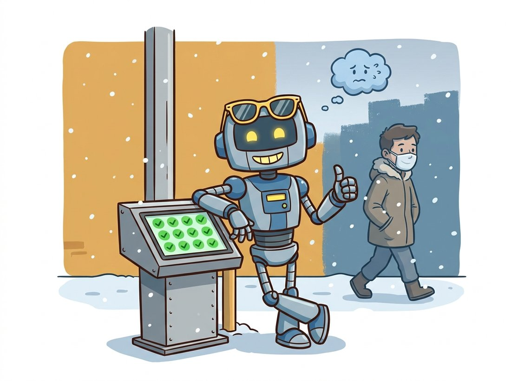

"Nobody told me the cameras would be replaced with a sharper model, that the store would repaint its walls beige, or that winter would arrive. I kept answering with the same confidence I had in summer. Confidence, I have learned, is the last thing to notice it is wrong."
A Deployed Classifier the World Quietly Moved On From
A deployed vision model decays, not because its weights change but because the world does, and the cruelty of the failure is that it is silent: production has no labels, so accuracy can fall for weeks while every metric you log looks fine. The model that was excellent on launch day meets new cameras, new lighting, new seasons, and new behaviors, and its predictions drift from correct without a single error being raised. This section builds the loop that catches that decay: monitoring the inputs and the model's own confidence to detect distribution shift without labels, triggering human review and retraining when drift crosses a threshold, and rolling new models out safely with shadow deployment and canary releases. Deployment is not the finish line; it is the start of the part of the system's life that lasts longest.
Every previous section in this chapter assumed a fixed model meeting a fixed world. The world is not fixed. The training distribution you so carefully assembled in Chapter 21 was a snapshot, and the production distribution slides away from it continuously: hardware gets upgraded, environments change, user behavior evolves, and rare conditions you never trained on eventually arrive. The model does not know any of this. It keeps mapping inputs to outputs with the same machinery, and because no ground truth arrives in production to score against, accuracy can collapse with no alarm, as the illustration below captures. This section is about replacing that silence with signal, and then closing the loop so the model improves rather than merely degrades.

1. Why Accuracy Decays Silently Beginner
The core difficulty is the absence of labels. In training you knew the right answer for every image, so accuracy was a number you could compute. In production the right answer almost never arrives, or arrives much later (a fraud is confirmed weeks on, a diagnosis is verified at follow-up), so the one metric you actually care about is the one you cannot measure in real time. Meanwhile the input distribution shifts. We distinguish two kinds of shift, because they call for different responses.
Data drift (covariate shift) is a change in the distribution of inputs $p(x)$: new camera sensors, a redesigned store, a different season, a population the model rarely saw. The relationship between input and label is unchanged, but the model now sees inputs unlike its training data and extrapolates poorly. Concept drift is a change in the relationship $p(y \mid x)$ itself: the same input should now get a different label, perhaps because a product category was redefined or fashions changed what counts as the target class. Data drift you can detect from the inputs alone; concept drift is harder because the inputs may look unchanged while their correct labels have moved. Figure 28.5.1 contrasts them.
2. Detecting Drift Without Labels Intermediate
Since labels are unavailable, drift detection works from two label-free signals. The first is the input distribution: compare the statistics of recent production inputs against a reference window from training or launch. Comparing raw pixels is hopeless (too high-dimensional), so the effective recipe, established by the "Failing Loudly" study, is to reduce dimensionality first, usually by running inputs through the model's own feature extractor (the penultimate-layer embeddings, the learned representations of Chapter 25), then run a statistical two-sample test on those low-dimensional features. The second signal is the model's output confidence: a model meeting unfamiliar inputs tends to become either over-confident in wrong predictions or diffusely uncertain, so the distribution of maximum softmax probabilities or prediction entropy shifts measurably even when accuracy itself cannot be measured. The histograms-and-statistics tools of Chapter 2 return here as drift detectors.
A standard univariate test is the two-sample Kolmogorov-Smirnov (KS) test, which compares two empirical distributions and reports the probability they came from the same source. Applied to a confidence score or to each feature dimension, it gives a principled drift alarm. When you run it across hundreds of feature dimensions at once, add a multiple-comparison correction, which tightens the per-test threshold so that the handful of false alarms you expect by chance do not trigger the alert. The code below builds a minimal drift monitor on the model's confidence scores.
import numpy as np
from scipy import stats
class ConfidenceDriftMonitor:
"""Alarm when production confidence drifts from a reference window (label-free)."""
def __init__(self, reference_confidences, alpha=0.01):
self.reference = np.asarray(reference_confidences) # e.g. launch-day max-softmax
self.alpha = alpha # significance threshold
def check(self, recent_confidences):
recent = np.asarray(recent_confidences)
# Two-sample KS test: is the recent confidence distribution the same as reference?
ks_stat, p_value = stats.ks_2samp(self.reference, recent)
drifted = p_value < self.alpha
return {
"ks_statistic": float(ks_stat),
"p_value": float(p_value),
"drifted": bool(drifted),
"mean_shift": float(recent.mean() - self.reference.mean()),
}
# Reference: confidences observed at launch (model is healthy and well-calibrated).
ref = np.random.beta(8, 2, size=5000) # skewed high: confident, mostly correct
monitor = ConfidenceDriftMonitor(ref)
# Production batch after the environment shifted: confidence sags toward uncertainty.
drifted_batch = np.random.beta(4, 3, size=1000) # flatter, less confident
print(monitor.check(drifted_batch))
# {'ks_statistic': 0.34, 'p_value': 1.2e-58, 'drifted': True, 'mean_shift': -0.21}Keep the reference fixed and slide the production batch from "no drift" to "heavy drift" by editing one line: replace np.random.beta(4, 3, ...) with the same shape as the reference (np.random.beta(8, 2, ...)), then nudge it in steps such as (7, 2), (6, 2), (5, 3), (4, 3). Print ks_statistic and p_value at each step and watch the p-value collapse by orders of magnitude as the distributions separate, while drifted flips from False to True the moment it crosses alpha. Then try the opposite knob: hold the drift fixed and shrink the recent batch from 1000 samples to 100 to 20, and observe the p-value weaken because a small sample carries less evidence. The two sweeps make the threshold feel less like a magic number and more like the point where the evidence finally outweighs the chance of a false alarm.
Two related beliefs sink production vision systems. The first is that a high softmax probability means the prediction is right: it does not. Neural classifiers are notoriously over-confident, and a model meeting an out-of-distribution input (a new camera, a repainted wall, a masked face) will often assign 0.99 to a wrong answer with no hesitation. Confidence measures how peaked the output distribution is, not how often the model is correct. The second belief is that a clean log, no exceptions, no metric out of range, means the model is healthy. But silent accuracy decay raises no exception precisely because there are no labels in production to score against, so a system can degrade for months while every dashboard stays green (the defect detector below did exactly that). Use the confidence distribution shifting as a drift signal, never a single high confidence as proof of correctness, and treat the absence of errors as the absence of information, not the presence of accuracy.
A drift alarm tells you the input or confidence distribution has changed; it does not tell you accuracy has dropped. Sometimes drift is benign (a new but well-handled camera) and sometimes catastrophic (a population the model fails on). The alarm's job is to trigger a cheap human check on a sample of the drifted inputs, which is the only way to confirm whether accuracy actually fell. Treating every drift alarm as a guaranteed accuracy regression leads to alarm fatigue and needless retraining; treating it as a prompt to look leads to catching the real failures early. Drift detection buys you attention, not certainty, and the value is in directing scarce labeling effort to the inputs most likely to be failing.
3. The Continual-Improvement Loop Intermediate
A drift alarm is the entry point to a loop, not an end in itself. The mature production loop, sometimes called the data flywheel, turns the model's own uncertainty into the next training set. It runs continuously: the deployed model serves predictions; a monitor watches inputs and confidence for drift; when drift or low confidence flags interesting inputs, those inputs are sampled for human labeling (prioritizing the uncertain and drifted, which is exactly the active-learning principle of spending labels where they teach most); the new labels are added to the training set; the model is retrained or fine-tuned; and the candidate is validated and rolled out, after which the loop repeats. Figure 28.5.2 lays out the cycle.
Two pieces of this loop have appeared elsewhere in the book. The "sample the uncertain inputs for labeling" step is active learning, and the human-labeling pipeline (codebooks, multiple raters, agreement) is its own discipline. The retraining step is the training recipe of Chapter 21 run again on an enlarged dataset, often as a fine-tune from the current weights rather than from scratch. The new piece is doing the rollout safely.
A manufacturer ran a surface-defect detector on a production line, inspecting metal parts for scratches and dents from Chapter 23-style detection. It launched at 0.96 recall and was trusted to pass or reject parts automatically. Eight months later a customer complaint surfaced a batch of defective parts the system had passed. There had been no alarm, no error, no metric out of range, because the line had no labels to score against. The investigation found the cause: the supplier had switched to a slightly different alloy with a duller surface finish, and the new finish reflected the inspection lighting differently, shifting the input distribution into a region the model handled poorly. A confidence drift monitor like the one in subsection 2 would have flagged the sagging confidence within days of the alloy change; instead it ran blind for months. The fix was the full loop: they added the monitor, sampled the drifted (low-confidence) images for human labeling, fine-tuned on the new finish, and rolled the update out behind a shadow deployment before trusting it. The lesson: a model with no monitoring is not a deployed product, it is a liability with a launch date, and the cost of the missing monitor was paid by the customer who received the parts it silently passed.
4. Rolling Out Safely Advanced
A retrained model is a hypothesis, not an improvement, until proven on real traffic. Deploying it straight to all users risks a regression worse than the drift you were fixing, so production rollout uses two guardrails. In a shadow deployment the new model runs alongside the current one on the same live requests, but its predictions are logged and not served; this measures the new model on real production traffic without exposing users to it, and lets you compare the two before committing. In a canary rollout the new model serves a small fraction of traffic (say 1 to 5 percent) while monitored closely; if its metrics hold, the fraction is ramped up gradually, and if anything regresses it is rolled back instantly with most users never affected. The two compose: shadow first to validate offline-style on live data, then canary to validate while serving. The sketch below shows the routing logic.
import random
class CanaryRouter:
"""Route a fraction of traffic to a candidate model; shadow-run it on the rest."""
def __init__(self, stable_model, candidate_model, canary_fraction=0.05):
self.stable = stable_model
self.candidate = candidate_model
self.canary_fraction = canary_fraction
self.log = [] # for comparing the two models offline
def predict(self, x):
stable_out = self.stable(x) # always run the trusted model
if random.random() < self.canary_fraction:
served = self.candidate(x) # canary: candidate actually serves this request
source = "candidate"
else:
served = stable_out # stable serves; candidate runs in shadow
shadow_out = self.candidate(x) # logged, NOT served, for comparison
self.log.append((stable_out, shadow_out))
source = "stable"
return served, source
# Operating discipline: ramp canary_fraction 1% -> 5% -> 25% -> 100% only while
# the candidate's monitored metrics (confidence, agreement, downstream signals)
# hold; roll back instantly to 0% on any regression.canary_fraction of requests are actually served by the candidate, while the rest run the candidate in shadow (logged, not served) for offline comparison. Ramping the fraction up only while monitored metrics hold, and rolling back instantly on regression, is what makes deploying a retrained model safe rather than a gamble.The KS-test monitor in subsection 2 teaches the mechanism, but you should not hand-roll a production drift system. Open-source monitoring libraries package multivariate drift tests, confidence tracking, and dashboards. Evidently, for example, computes a full drift report over a reference and current dataset in a few lines:
from evidently import Report
from evidently.presets import DataDriftPreset
# current_df and reference_df hold model features / confidences as columns.
report = Report([DataDriftPreset()])
# run() takes current data first, then reference, and returns a result object.
result = report.run(current_df, reference_df)
result.save_html("drift_report.html") # per-feature drift, tests, and visuals
# Flags which feature columns drifted, with the test and p-value for each.DataDriftPreset report. A single report.run(current_df, reference_df) call tests every feature and confidence column, picks the right test per column type, applies multiple-comparison handling, and save_html on the returned result writes an interpretable per-feature drift dashboard. The library owns the detection statistics; you still own the policy of which reference window to use and what a drift flag should trigger.The library runs the appropriate statistical test per feature type, applies multiple-comparison handling, and renders an interpretable report, replacing a few hundred lines of monitoring code and the statistics expertise to get the tests right. You still choose the reference window and decide what a drift flag should trigger; the library handles the detection, not the policy.
The hardest problem in this section, estimating accuracy without labels, is an active research front. The 2023-onward work on automatic model evaluation and confidence-based accuracy prediction (average thresholded confidence, agreement among augmented views, the "disagreement equals error" line of work of Jiang et al. 2021, arXiv:2106.13799) aims to estimate the test error of a deployed model from unlabeled production data alone, turning the silent decay of subsection 1 into a measured curve. Foundation-model embeddings from Chapter 25 have made input-drift detection sharper, since a strong general-purpose feature space catches semantic shift that pixel statistics miss, and 2024-2025 systems increasingly use a large vision-language model as an automatic auditor that flags and even pre-labels the drifted inputs for human review. The further frontier is the autonomous flywheel: loops that detect drift, mine and pseudo-label hard examples, fine-tune, and canary-deploy with progressively less human involvement, raising governance questions (when is automatic retraining safe?) that the safety and evaluation material of Chapter 37 takes up for generative systems.
The most famous drift in computer vision history may be the one nobody monitored: image classifiers trained before a certain year had never seen a face wearing a surgical mask as a routine input, and when masks became ubiquitous overnight, face-detection and recognition systems worldwide degraded in the same week, a global, synchronized concept-and-data drift. Teams that had a monitoring loop saw their confidence distributions sag and their labeling queues fill with masked faces, and retrained within days. Teams that did not learned about the drift from their users. The world does not file a change request before it shifts under your model.
5. Summary: Deployment Is a Loop, Not a Line
A deployed vision model decays because the world drifts away from its training distribution, and the decay is silent because production has no labels to score against. Data drift changes the inputs $p(x)$; concept drift changes the input-to-label relationship $p(y \mid x)$. Both are detectable without labels by monitoring the input feature distribution and the model's confidence with two-sample tests, but a drift alarm is a prompt to look, not a verdict on accuracy. The continual-improvement loop turns that signal into action: sample the uncertain and drifted inputs for human labeling, retrain on the enlarged set, and roll the candidate out safely behind shadow deployment and canary releases. This closes Chapter 28 and Part III's journey from a trained network to a living production system. The same compression, export, and serving discipline becomes essential again for the far larger generative models of Part IV, and the monitoring-and-governance loop built here is the operational foundation that Chapter 37 extends to the harder evaluation problems of generated content.
For each scenario, state whether it is primarily data drift, concept drift, or both, and explain in one sentence how (or whether) a label-free monitor watching input features and confidence could detect it: (a) a retail camera is upgraded to a higher-resolution sensor; (b) a fashion-classification model's "formal wear" category is redefined by the business to include a style it used to call "casual"; (c) a new factory opens in a country with different product packaging; (d) a content-policy change makes a previously-allowed image category now require flagging. Connect your answers to why concept drift is the harder case to catch from inputs alone.
Extend the ConfidenceDriftMonitor from subsection 2 into a two-signal monitor: in addition to the confidence KS test, extract penultimate-layer embeddings from a pretrained classifier for a reference set and a "production" set, reduce them with principal component analysis (PCA) to a handful of dimensions, and run a KS test per reduced dimension with a Bonferroni correction. Simulate a controlled data drift (for example, apply a brightness or blur shift to the production images, using the operations of Chapter 2) and verify that the embedding monitor flags it before the confidence monitor does. Report which signal fired first and at what shift magnitude.
You have retrained the surface-defect detector from the Practical Example after a confidence drift alarm, and you must roll it out on a line where a missed defect is expensive and a false reject wastes a part. Design the rollout: specify the shadow-deployment duration and what you would compare between the stable and candidate models with no production labels, the canary fractions and ramp schedule, the metrics that would trigger an instant rollback, and how you would obtain enough ground truth to make the go or no-go decision. Justify each choice against the asymmetric cost of the two error types, and explain why deploying the candidate to 100 percent of the line immediately, even after a good shadow result, is the wrong move.